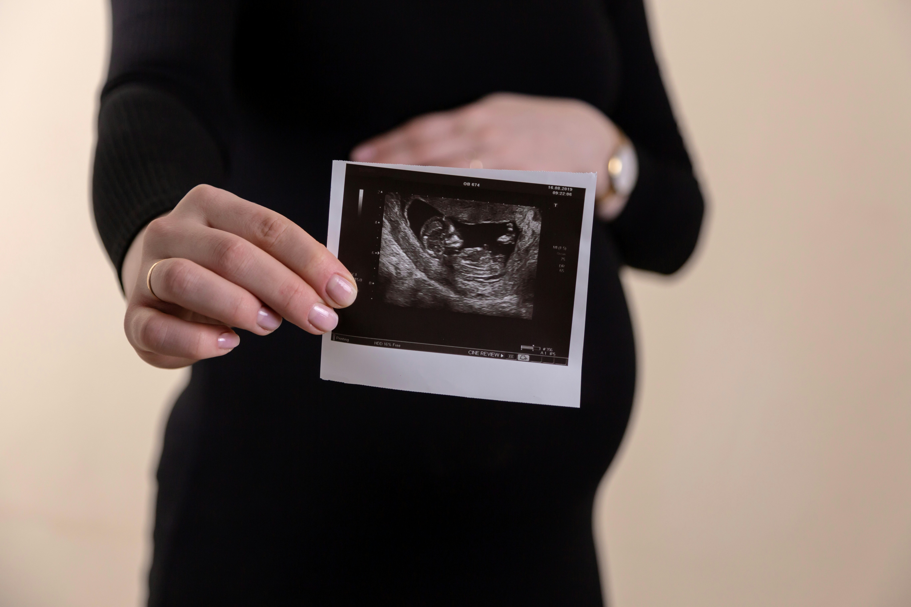
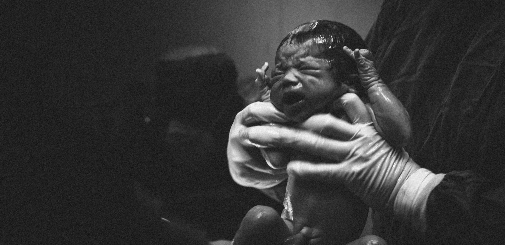

Doğum Fotoğrafçısı Hizmetleri
OM Medikal Kadın ve Doğum Hastanesi olarak, doğum anınızı ölümsüzleştirmek ve bu özel anı en güzel şekilde hatırlamanızı sağlamak için profesyonel doğum fotoğrafçılığı hizmetleri sunuyoruz. Doğum anının her detayını ve ilk anların büyüsünü yakalamak için uzman fotoğrafçılarımız yanınızda olacak.
Navigasyon
Doğum Fotoğrafçılığı Hizmetlerimiz
Doğum Anı Fotoğrafları
- Doğum sürecinin başlangıcı, ilerleyişi ve doğum anı gibi önemli anları fotoğraflıyoruz.
- Doğum sürecinin başlangıcı, ilerleyişi ve doğum anı gibi önemli anları fotoğraflıyoruz.
Yenidoğan Fotoğrafçılığı
- Yenidoğan fotoğrafları, bebeğinizin doğal ve tatlı anlarını yakalıyoruz.
- Aile fotoğrafları ve ilk anlar ile ailenizin bu yeni dönemini birlikte kutluyoruz.

Neden Bizimle Çalışmalısınız?
- Uzman Fotoğrafçılar:Deneyimli ve profesyonel fotoğrafçılarımız, en özel anlarınızı en kaliteli şekilde yakalar.
- Özelleştirilmiş Çözümler: Her ailenin ve doğumun kendine özgü olduğunu biliyoruz. İhtiyacınıza göre kişiselleştirilmiş fotoğrafçılık hizmetleri sunuyoruz.
- Doğal ve Duygusal Anlar:Doğal ve duygusal anları yakalayarak, gerçek ve anlamlı anıların fotoğraflarını çekiyoruz.
- Yüksek Kalite: En son teknoloji fotoğraf ekipmanları ile yüksek çözünürlüklü ve estetik fotoğraflar sunuyoruz.

Bizi Deneyenler Ne Diyor?
-
Ali.K
 "Fotoğrafçımızın doğum anımızı ölümsüzleştirmesi harikaydı! Hem teknik hem de insani yaklaşımıyla mükemmel bir deneyim yaşadık. Bebek ve aile fotoğraflarımız gerçekten çok özel. Kendisine teşekkür ediyoruz!"
"Fotoğrafçımızın doğum anımızı ölümsüzleştirmesi harikaydı! Hem teknik hem de insani yaklaşımıyla mükemmel bir deneyim yaşadık. Bebek ve aile fotoğraflarımız gerçekten çok özel. Kendisine teşekkür ediyoruz!"
-
Yeşim.K
 "Kızımızın doğumunu böyle güzel bir şekilde belgelemiş olmanın mutluluğunu yaşıyoruz. Fotoğrafçı, hastane ortamında bile sıcak ve samimi bir atmosfer yarattı. Sonuç olarak harika fotoğraflarımız oldu. Kesinlikle tavsiye ederim!"
"Kızımızın doğumunu böyle güzel bir şekilde belgelemiş olmanın mutluluğunu yaşıyoruz. Fotoğrafçı, hastane ortamında bile sıcak ve samimi bir atmosfer yarattı. Sonuç olarak harika fotoğraflarımız oldu. Kesinlikle tavsiye ederim!"
-
Aslı L.
 "Doğum fotoğrafçılığı konusunda seçtiğimiz kişi, bu sürecin tüm detaylarını büyük bir özenle yakaladı. Fotoğraflar, duygularımızı ve anıların güzelliğini gerçekten yansıtıyor. Hem teknik hem de estetik açıdan mükemmel bir iş çıkardılar."
"Doğum fotoğrafçılığı konusunda seçtiğimiz kişi, bu sürecin tüm detaylarını büyük bir özenle yakaladı. Fotoğraflar, duygularımızı ve anıların güzelliğini gerçekten yansıtıyor. Hem teknik hem de estetik açıdan mükemmel bir iş çıkardılar."
-
Ayşe P.
 "Bebeğimizin doğum anını ölümsüzleştiren fotoğrafçıya teşekkürler! Profesyonelliği, sabrı ve güler yüzüyle bu süreçte çok yardımcı oldu. Fotoğraflar gerçekten olağanüstü, her ayrıntı çok iyi düşünülmüş."
"Bebeğimizin doğum anını ölümsüzleştiren fotoğrafçıya teşekkürler! Profesyonelliği, sabrı ve güler yüzüyle bu süreçte çok yardımcı oldu. Fotoğraflar gerçekten olağanüstü, her ayrıntı çok iyi düşünülmüş."